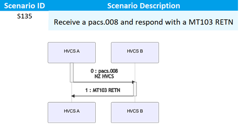
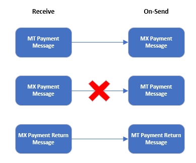

This document, the Co-Existence Procedures (Part F) is one part of a suite of documentation to help participants understand what is required to become a high value clearing system (HVCS) participant and how to send and receive individual HVCS instructions and NZD HVCS payments that the participant cannot revoke or reverse after settlement.
This document should be read in conjunction with the Payments NZ Rules (in particular, Part 9). Part 9 contains the HVCS clearing and settlement rules which specify the requirements for participants to create, exchange, settle, deliver and receive HVCS instructions and make HVCS payments (including SCPs) through HVCS. Part 2 contains the access and participation rules for an entity to join HVCS.
In addition to the Rules, the applicable HVCS standards (Appendix 14) which specify how participants comply with Part 9 are comprised of:
For information on how to determine whether the content of an applicable HVCS standard in Appendix 14 creates binding legal rights or obligations, please see Part A - Overview.
Notwithstanding anything in clause 1.8 of the Rules or in Part A — Overview, any reference to actions a person "should" take or anything a person "should" do is intended to convey a best practice with which a person should comply with only, but which has no legal effect.
Co-existence phase means the period determined by Payments NZ in which the MT Messaging Procedures, the MX Messaging Procedures, the MX Message Specifications and these Co-existence Procedures all apply simultaneously beginning on 20 March 2023 and ending on a date:
On-send means when a participant, in its capacity as an intermediary:
Send means when an instructing agent delivers an HVCS instruction to an instructed agent, being either:
Structured Postal Address formatting means when the content of the address information within an MX message is formatted in accordance with the structured data requirements set out in the MX Message Specifications.
Unstructured Address Line formatting means when the content of the address information within an MX message is not formatted in accordance with the structured data requirements set out in the MX Message Specifications.
Unless the context otherwise specifies, all other defined terms have the meanings given to them in Part 19 of the Payments NZ Rules and the HVCS Common Procedures.
Messages exchanged between SWIFT message transfer service and participants:
| MT message | MX message | NZ HVCS timing | CBPR+ timing |
|---|---|---|---|
| MT 103 - Single Customer Credit Transfer |
pacs.008 - FI to FI Customer Credit Transfer
RETN pacs.004 — Payment Return
|
By the beginning of the co-existence phase: Participants must be able to receive and process HVCS instructions as an MX message By the end of the co-existence phase: Participants must be able to send, receive and process HVCS instructions as an MX message |
By the beginning of the co-existence phase: Participants acting as intermediaries5 must be able to receive and process CBPR+ messages. Subject to clause 1.7(7)(a)(iv)of these Co-existence Procedures, participants acting as intermediaries must be able to on-send a CBPR+ message to participants as an MX message. By the end of the co-existence phase: Participants acting as intermediaries must be able to send CBPR+ messages and on-send all CBPR+ messages to participants as an MX message. |
| MT 202 - General Financial Institution Transfer |
pacs.009 - Financial Institution Credit Transfer
RETN pacs.004 — Payment Return
|
||
| MT 202 COV - General Financial Institution Cover |
pacs.009 COV - Financial Institution Credit Transfer Cover
RETN pacs.004 — Payment Return
|
||
| MT 205 - Financial Institution Transfer Execution |
pacs.009 - Financial Institution Credit Transfer
|
||
| MT 205 COV - Financial Institution Transfer Execution Cover |
pacs.009 COV - Financial Institution Credit Transfer Cover
|
||
| MT 012 - FIN-Copy Sender Notification | xsys.002 - Authorisation Notification |
By the beginning of the co-existence phase: Participants must be able to receive from SWIFT and process as an MX message |
n/a |
| MT 019 - FIN-Copy Abort Notification | xsys.003 - Refusal Notification |
By the beginning of the co-existence phase: Participants must be able to receive from SWIFT and process as an MX message |
n/a |
Messages exchanged between SWIFT message transfer service and HVCS (RBNZ):
| MT message | MX message | NZ HVCS timing | CBPR+ timing |
|---|---|---|---|
| MT 096 - FIN-Copy to Central Institution Message | xcop.xxx - SWIFTNet Copy message |
By the beginning of the co-existence phase: RBNZ must be able to receive and process as an MX message |
n/a |
| MT 097 - FIN-Copy to Message Authorisation / Refusal | xsys.001 - Settlement Notification |
By the beginning of the co-existence phase: RBNZ must be able to send as an MX message |
n/a |
Messages exchanged between SWIFT and participants:
| MT message | MX message | NZ HVCS timing | CBPR+ timing |
|---|---|---|---|
| MT 010 - Non-Delivery Warning | xsys.010 - Non-Delivery Warning |
By the beginning of the co-existence phase: Participants must be able to receive from SWIFT and process as an MX message |
By the beginning of the co-existence phase: Participants acting as intermediaries must be able to receive from SWIFT as an MX message
|
| MT 011 - Delivery Notification | xsys.011 - Delivery Notification |
1.4 Cash management message scope
The following cash management messages are in scope during the co-existence phase:
| MT message | MX message | NZ HVCS timing | CBPR+ timing |
|---|---|---|---|
| MT 192 / 292 - Request for Cancellation | camt.056 - FI to FI Cancellation Request |
By the beginning of the co-existence phase: Participants must be able to receive from SWIFT and process as an MX message |
By the beginning of the co-existence phase: Participants acting as intermediaries must accept CBPR+ camt.056 messages. MX->MT and MT->MX translation will be available via the SWIFT Transaction Manager. |
| MT 196 / 296 - Answers | camt.029 - Resolution of Investigation |
By the beginning of the co-existence phase: Participants must be able to receive from SWIFT and process as an MX message |
By the beginning of the co-existence phase: Participants acting as intermediaries must accept CBPR+ camt.029. MX->MT and MT->MX translation will be available via the SWIFT Transaction Manager. |
A phased adoption of MX Messaging Procedures will begin on 20 March 2023, with the full transition to MX messaging mandated at the end of the co-existence phase (currently scheduled for November 2025).

Information on how to prepare for the AVP MX CUG and the process to join the CUG is provided by the RBNZ Confluence website.
Clarification on the process to retire the AVP MT CUG will be developed with participants during the co-existence phase.
| 1 | 2 | 3 | 4 | 5 | 6 |
|---|---|---|---|---|---|
|
MT Block 1, 2
MX InterAct Headers Sender
Receiver
Instructing Agent
Instructed Agent
|
MT Block 4
MX BAH / Business Document Debtor Agent
Creditor Agent
Intermediaries
|
||||
| Test BIC | Production BIC | Test BIC | Production BIC | ||
| SWIFT |
AVP MT
Test CUG |
✓ | ✘ | ✓ | ✓ |
|
AVP MX
Test CUG |
✘ | ✓ |
✓
(for coexistence)
|
✓ | |
| RBNZ |
AVP MT
Test CUG |
✓ | ✘ | ✓ | ✓ |
|
AVP MX
Test CUG |
✘ | ✓ | ✘ | ✓ | |


This section is relevant for intermediaries sending and receiving cross border payments and instructions via the FINPlus CUG.
| Message type | Element |
|---|---|
| pacs.008 | Category purpose |
| pacs.008 | Ultimate debtor |
| pacs.008 | Ultimate creditor |
| pacs.008 | Structured remittance information |
| pacs.008 | Purpose |
| pacs.008 | Regulatory reporting |
| pacs.008 |
Rich debtor or creditor information
(structured address or LEI or Name with more than 70 characters)
|
| pacs.009 | Category purpose |
| pacs.009 | Purpose |
| pacs.009 |
Rich debtor or creditor information
(structured address or LEI or Name with more than 70 characters)
|
| pacs.009 | Remittance information |
| pacs.009 COV | Purpose |
| pacs.009 COV |
Rich debtor or creditor information
(structured address or LEI or Name with more than 70 characters)
|
| pacs.009 COV | Remittance information |
| pacs.009 COV |
Underlying credit transfer:
|
As participants introduce new functionality/platforms to be included, there will be testing required.
| Window no / year | Testing 4 weeks | Defect resolution 2 weeks | Prepare / implement / PVT 2 weeks | Go live Monday |
|---|---|---|---|---|
| 1 (2024) | 1 — 26 April | 29 April — 10 May | 13 — 24 May | 27 May |
| 2 (2024) | 1 — 26 July | 29 July — 9 August | 12 — 23 August | 26 August |
| 3 (2024) | 30 September — 25 October | 28 October — 8 November | 11 — 22 November | 25 November |
| 4 (2025) | 31 March — 26 April | 28 April — 9 May | 12 — 23 May | 26 May |
| 5 (2025) | 30 June — 25 July | 28 July — 8 August | 11 — 22 August | 25 August |
During the co-existence phase, Payments NZ may coordinate testing for participants who propose to test and implement all MX message capabilities in a single release window.
If a participant chooses to introduce a capability outside of a release window, the following table defines who should be informed for each new capability and the recommended notice period.
| Capability | No industry visibility required | Inform HVCS participants (no lead-time required) | Inform HVCS participants (minimum of 1 month lead-time) | Inform HVCS participants and Bilateral Test (minimum of 1 month lead-time) | Inform HVCS participants and Industry Test | Inform SWIFT | Inform RBNZ RTGS Help Desk | Inform RBNZ Ops | Notes / Assumptions |
|---|---|---|---|---|---|---|---|---|---|
| Commence sending pacs.008 (SCP) | ✔ | ✔ | Bilateral tests reflect heightened sensitivity as participants begin sending MX messages | ||||||
| Will no longer be sending MT103 (SCP) to other HVCS participants | ✔ | ✔ | |||||||
| Commence sending pacs.008 (inbound Cross Border to other HVCS Participants) | ✔ | ||||||||
| Will no longer be sending MT103 (inbound Cross Border) messages to other HVCS participants | ✔ | ✔ | |||||||
| Commence sending pacs.008 (outbound Cross Border to other HVCS participants) | ✔ | ✔ | |||||||
| Will no longer be sending MT103 (outbound Cross Border) to other HVCS participants | ✔ | ||||||||
| Commence sending pacs.004 | ✔ | ✔ | |||||||
| Will no longer be sending MT103 RETN or MT202 RETN to other HVCS participants | ✔ | ||||||||
| Commence sending pacs.009 | ✔ | ✔ | |||||||
| Will no longer be sending MT202 to other HVCS participants | ✔ | ||||||||
| Commence sending pacs.009 COV | ✔ | ✔ | |||||||
| Will no longer be sending MT202 COV to other HVCS participants | ✔ | ||||||||
| Exception messages — will commence sending camt 056 messages | ✔ | Deemed low complexity and therefore IT not required. Bilateral testing is optional and may be requested by informed participants. | |||||||
| Exception messages — will commence sending camt 029 messages | ✔ | ||||||||
| Will commence sending address details in the structured address format | ✔ | If testing for the beginning of the co-existence phase is rigorous, perhaps we don't need to revalidate? | |||||||
| Will commence sending remittance details in the structured remittance format | TBC | This requires bilateral and possibly end-to-end agreement. Includes all structured remittance information formats except Additional Remittance Information. | |||||||
| Will include Ultimate Debtor/ Creditor details | ✔ | ||||||||
| CLS Pay In —MT 202 to pacs.009 message | ✔ | ✔ | No interoperability risk because these payments flow is between a participant and CLS Bank. | ||||||
| CLS Pay Out (and CLS Statements?) - Migration from MT to MX format | ✔ | ✔ | |||||||
| Commence receiving MX statement messages from the RBNZ | ✔ | ✔ | |||||||
| Have no further need to be a member of the AVP MT CUG - now send ISO only MX messages | To be managed by the RBNZ as part of the CUG closure process | ||||||||
| Significant upgrade to a Participant's payments engine (processing HVCS payments) | ✔ | ✔ | This is a requirement in the HVCS rules today. | ||||||
| Changes to SWIFT gateway - technology/ repatriation | ✔ | ✔ | This is a requirement in the HVCS rules today. | ||||||
| Introduction of new exception and investigation messages | Not required as a new message type would initiate a more formal project | ||||||||
| Changes to payment flows via the Transaction Manager | Not required as changes to the TM will be managed on a case-by-case basis | ||||||||
| Confirmation of debit and credit messages (900/910) migration to ISO | ✔ | ✔ | PNZ to reach out to RBNZ to confirm implementation plans for these message types | ||||||
| NZ Clear - Cash settlements | Managed as an industry project | Test phase over a 2 week period - assumption move to iso at a point in time | |||||||